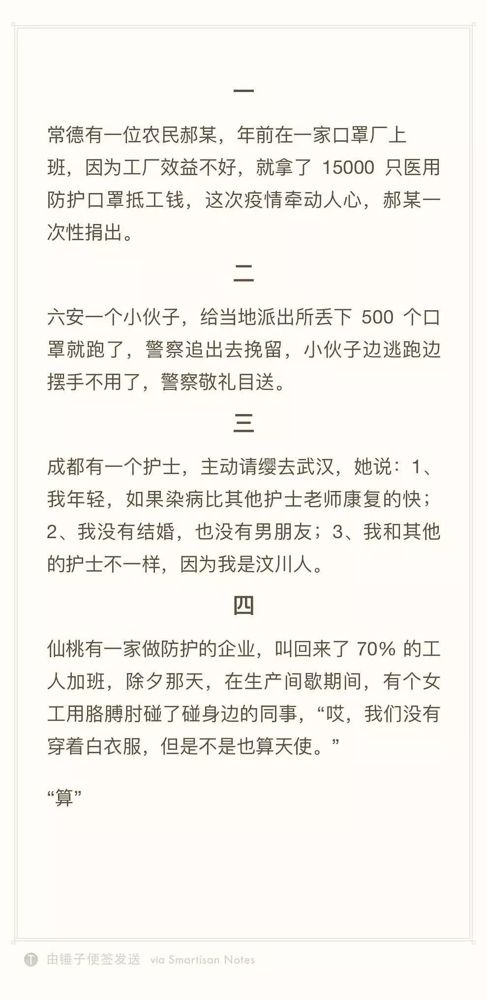

如果我能重启2020
原文链接 备份链接 KOBE BRYANT 1978-2020 R.I.P. 2020年1月27日。 农历正月初三。 武汉封城第五天。 天门封城第四天。 天真冷啊。虽然疫区今天终于见到了久违的阳光。 可也传来了晴天霹雳的消息：科比坠机罹 …
2020年1月28日。
农历正月初四。
武汉封城第六天。
天门封城第五天。

回来一周了。不出所料，疫情正处于缓慢爬坡期，病毒也越来越狡猾，潜伏期症状趋于复杂和多样化。不出意外，2月份才是此役关键和转折所在，疫区也还得封个十天八天。可昨晚武汉人民就憋不住了：集体开窗齐唱国歌。此事一时议论纷纷，感动者有之，嗤鼻者有之，倒没人能感同身受武汉人民之憋屈。至少吼两嗓子，心里头，要舒畅多了吧？
“都怪武汉人”、“都是你们吃蝙蝠害的”、“谁叫你们不乖乖在家待着”、“得了病还到处乱跑”…疫情一起，各地掀起一股Anti武汉人的浪潮，在外鄂A民众仿佛成了过街老鼠；河南、湖南等省界地区民众还将道路毁坏，或用大石拦住禁止湖北人进入；更有少数香港台湾同胞表示要对大陆“反向封城”…躬逢盛世，承平日久，从未经此阵仗的现代人，面对一种看不见的敌人毒燎虐焰，不去就事论事反思造成这种局面的原因，反而将矛头对准了有形的无辜的同胞。把ZF的失职和无能转换为人民内部的阶级矛盾，这也是我D的拿手好戏。在大一统外皮下，内核仍是家门之外皆敌人。
当然，还是有好消息的，至少让我们不至于对人性的光芒失去希望。欢迎分享你所看到的“光芒”，让更多人燃起希望，打赢这场胜仗！



水妈
长按二维码向我转账
受苹果公司新规定影响，微信 iOS 版的赞赏功能被关闭，可通过二维码转账支持公众号。
原文链接 备份链接 KOBE BRYANT 1978-2020 R.I.P. 2020年1月27日。 农历正月初三。 武汉封城第五天。 天门封城第四天。 天真冷啊。虽然疫区今天终于见到了久违的阳光。 可也传来了晴天霹雳的消息：科比坠机罹 …
原文链接 备份链接 1月23日清早起来时，看到武汉封城的消息。起床后跟正在做饭的母亲说了一声，母亲不是很能理解，也不大关注。这几天一直在她耳边念叨太多疫情的事情，我感觉她都有些消化不过来了。很快黄冈市区也封城了，到了下午我老家武穴也传出了 …
原文链接 备份链接 本文故事来自一名化名为“平安”的武汉大学生，记述了她从返乡、封城，再到过年所经历的种种。这个特殊的春节，焦虑与希望同在，寂静与喧嚣并存。身处「风暴中心」，从慌乱到乐观，她的心理发生了什么样的变化？让我们一起来看看她过去 …
原文链接 备份链接 二月初五（2月27日）。 天气又阴了。有一点凉气，但也不算太冷。走出去望望天，觉得没有阳光的天空，多少有些阴郁和沉闷。 昨天微信号所发文章，又被删除。微博再次被屏蔽。我以为微博不能发了，试了一下，发现还可以再发其他，只 …
原文链接 备份链接 1⁄10 2020年1月25日，农历大年初一 来信：@徐大夫 坐标：武汉某心内科重症监护室 我们科室新年第一天上班的合照。 大家一起努力！ 2⁄10 2020年1月25日 来信：@双十一张友文 …